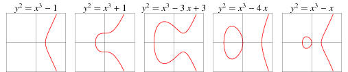

Winter Break Of Code Day 7
Yesterday was a day of meetings. Discussion and debate flourished. Conversations ranged over all parts of every project. Words spoken aloud may have outnumbered lines of code shipped. The entire team was fully engaged and people nearly had to be dragged out of the house for an afternoon hike to the top of the ridge.

Despite our intense collective focus on conceptual progress, when Trevor agreed to present an overview of elliptic curve cryptography, the entire team, veterans and “li’l Whisperers” alike, fell silent and gathered ‘round the whiteboard.
We learned about fields and curves and groups, of basepoints and cofactors, secrets and signatures. Questions abounded and Trevor delivered the answers, one after another, albeit with enough handwaving that I thought he might lift off and fly himself back to the mainland. However, there was one question that even he could not answer: Why are they called elliptic curves?
From Weierstrass to Montgomery to Edwards formats, these geometric objects that form the essential mathematical underpinnings of many modern crypto systems are not defined by ellipses, nor do they resemble ellipses. Not even for very stretchy definitions of an ellipse. There is no immediately obvious connection. So why do we call them that?
As usual, to understand the universe, we must first bake an apple pie from scratch. Or at least pretend to.
In your mind’s eye, picture a pie. If you don’t like apple pie, let’s say it’s whatever your preferred kind of pie happens to be: Apple, cherry, lorem, coconut, pizza, vegan, gluten-free, etc… The thing that really matters about this pie is that, unlike a traditional, circular pie, this one is shaped like an ellipse. It’s about 10 inches long – but only, say, 6 inches wide.
Now, pick up your mind’s knife and cut into the pie down its long axis, then make another cut at some angle (let’s call it θ) to the first cut, so that you can extract an unusually-shaped but still delicious slice of elliptic pie. It can be as large as you like, just as long as you leave a little piece for me; I won’t judge.
So, given that you know the length of the axes and the angle θ, how would you calculate the length of the curved crusty edge, also known as the arc length, of that slice? Go ahead and try, if you like. I’ll wait.
This turns out to be a tricky problem, which I won’t tell you how to solve yet. But now that you know about arc lengths, I can tell you why elliptic curves are called elliptic curves.
Our story begins in 18th century Berlin, which was then a part of the Kingdom of Prussia under the rule of Frederick the Great. By the light of a single candle, an aging Swiss mathematician, his right eye drooping and nearly useless, scratches complicated equations onto a sheet of parchment, his quill darting rapidly to and from the inkwell.
Figures and diagrams erupt onto the page in spurts and bursts. Explanations and annotations flow effortlessly around them. Here, bent low, brow furrowed, lips pursed in concentration, Leonhard Euler will produce his most famous works, changing the face of mathematical analysis and differential calculus forever.
Buried somewhere in the heaps and stacks of papers covering the desk, entrenched among the paragraphs of long slanting script, lies a method for computing the arc length of an ellipse. It’s a nasty-looking integral involving squares and trigonometric functions under a radical – the stuff of a first year calculus student’s nightmares. From there, an analysis goes on to abstract and describe an entire class of integral functions of similar form. The elliptic arc length problem is but a special case application of these formulae, which comprise their own little subfield of mathematics, yet they will categorically and perpetually be known as elliptic integrals.

Fast forward nearly a century. The year is 1804 when one, Carl Gustav Jacob Jacobi, is born. He is the second son of a Jewish banker in Potsdam, Germany. Dark-haired and wide-mouthed, eyes flashing with intelligence, Jacobi proves himself to be a true child prodigy. He enters school at age 12, graduates in a single year, and begins independently studying the works of Euler. His brilliance is so undeniable that, against all odds, he is eventually offered a position as a secondary school teacher, an all but unheard of accomplishment amongst the Ashkenazim. However, his sights are set higher. It takes him another two years, a few major mathematical discoveries, and a conversion to Christianity, but he eventually becomes the first Jewish-born math professor in a German university. He is 23 years old.
Two years after that he secures his tenure with the publication of his seminal work on a small set of functions which can be used to invert Euler’s elliptic integral operation. In other words, Jacobi’s functions will let you recover information about the angle, θ, of an elliptic arc, given its arc length. Because of this relationship, Jacobi’s formulae are known as elliptic functions, and, much as with Euler’s work, they can and have been generalized to a whole class of functions with similar properties.
Going one step further, an elliptic function, taken as an equation defined over a particular space, defines a limited set of possible solutions in that space, and these solutions, or points, when plotted, form the type of picture that we usually think of when we hear the word ‘curve’. The curves derived from elliptic functions in this way, are what we now know as elliptic curves.

A trip to Hawaii with Open Whisper Systems can be characterized by a series of curves. From the trajectory of the plane that brings you here, to the gentle slope of a sandy beach. From the subtle bend of the horizon, to the not-so-elliptic curves that make secure communication possible. Our surfboards traverse the curves of the rolling waves, as our minds traverse the curves of cryptographic theory. Call me corny, and call the curves what you will, just don’t call me late for dinner, and save me a slice of pie.
Kauai, January 18th, 2015
Disclaimer: Certain technical and historical details may have been altered, omitted, or fabricated for dramatic effect.